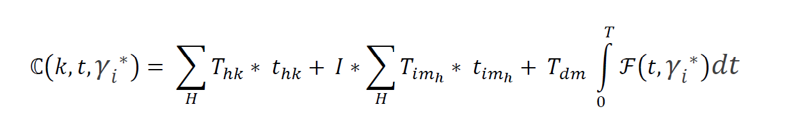
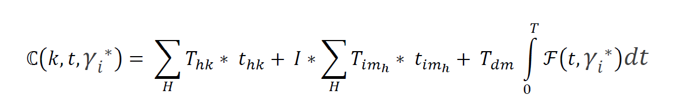

Trayectoria académica
Magíster en Planificación y Control de Gestión
2023 - 2024
Trabajo de tesis: TOMA DE DECISIONES BAJO INCERTIDUMBRE: PROPUESTA DE SISTEMA DE CONTROL DE GESTIÓN PARA OPTIMIZAR LOS PROCESOS DE RECLUTAMIENTO Y MEDICIÓN DEL DESEMPEÑO EN COPEC S.A.
Dentro de esta tesis desarrollé un algoritmo de 3 pasos mitigar los sesgos cognitivos basados en expectativas. El algoritmo es escalable a otros escenarios de toma de decisiones bajo incertidumbre y propone una función de expectativa basada en alisamiento exponencial, con el propósito de modelar una función de costo total que luego es posible de optimizar: 
2023 - 2024
Trabajo de tesis: TOMA DE DECISIONES BAJO INCERTIDUMBRE: PROPUESTA DE SISTEMA DE CONTROL DE GESTIÓN PARA OPTIMIZAR LOS PROCESOS DE RECLUTAMIENTO Y MEDICIÓN DEL DESEMPEÑO EN COPEC S.A.
Dentro de esta tesis desarrollé un algoritmo de 3 pasos mitigar los sesgos cognitivos basados en expectativas. El algoritmo es escalable a otros escenarios de toma de decisiones bajo incertidumbre y propone una función de expectativa basada en alisamiento exponencial, con el propósito de modelar una función de costo total que luego es posible de optimizar: 
Diplomado en Visualización de Datos
2019
Este programa busca introducir a los alumnos en diversas estrategias orientadas a la comunicación de información, mediante la transformación de datos en conocimiento, entendiendo sus procesos y modelos, así como los diversos aspectos técnicos y comunicacionales involucrados. Muy recomendado! Si te interesa, puedes ver más aquí.
2019
Este programa busca introducir a los alumnos en diversas estrategias orientadas a la comunicación de información, mediante la transformación de datos en conocimiento, entendiendo sus procesos y modelos, así como los diversos aspectos técnicos y comunicacionales involucrados. Muy recomendado! Si te interesa, puedes ver más aquí.
Ingeniero Civil Industrial
2008 - 2014
Trabajo de tesis: Control de inventario : desempeño de políticas centralizada y descentralizada bajo nivel de servicio difrenciado
Mi trabajo de tesis se orientó a encontrar una relación que demostrara la existencia de condiciones de indiferencia en la admnistración del inventario de seguridad cuando una empresa sirve a clientes con acuerdos de servicio (SLA) diferentes. Se probaron dos relacines: el número crítico de clases que induce indiferencia y la relación entre las varianzas de clases que induce a indiferencia (gamma*):
2008 - 2014
Trabajo de tesis: Control de inventario : desempeño de políticas centralizada y descentralizada bajo nivel de servicio difrenciado
Mi trabajo de tesis se orientó a encontrar una relación que demostrara la existencia de condiciones de indiferencia en la admnistración del inventario de seguridad cuando una empresa sirve a clientes con acuerdos de servicio (SLA) diferentes. Se probaron dos relacines: el número crítico de clases que induce indiferencia y la relación entre las varianzas de clases que induce a indiferencia (gamma*):